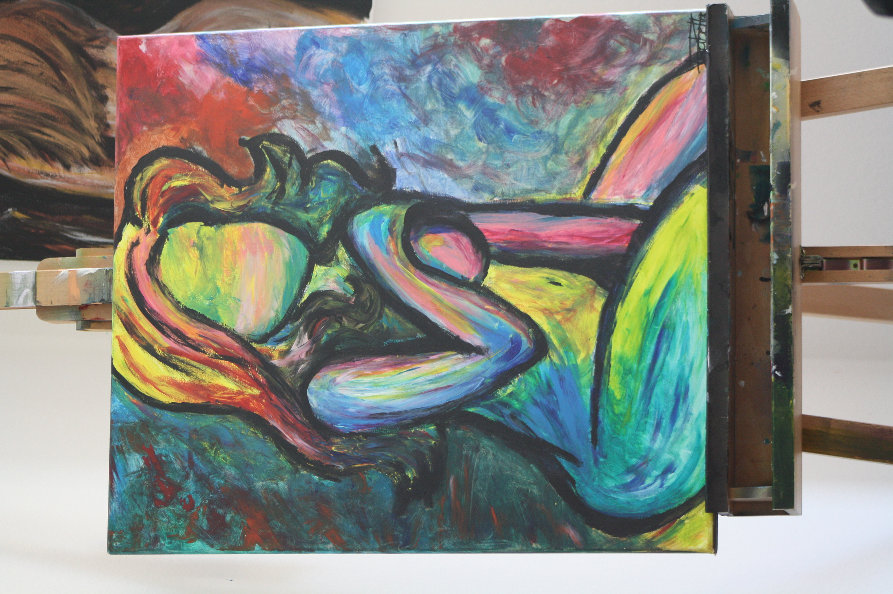
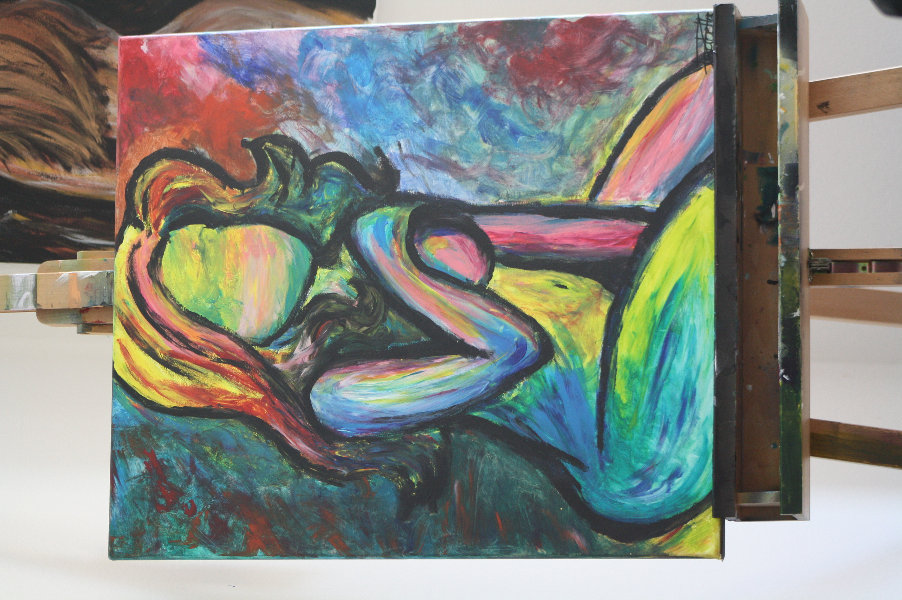

Mit Malerei sind keine Kritzeleien gemeint: ich zeichne zwar auch, aber ich bevorzuge die Malerei auf Leinwand mit Pinsel und Schwamm.
Meine bevorzugten Farben sind Acrylfarben und an Motiven bevorzuge ich es Personen zu malen. Allerdings habe ich auch schon Tiere und
Fantasiemotive gemalt.
Ich wende dabei keine spezielle Technik an. In der Regel suche ich mir Bilder heraus, die mich inspirieren und entwickle sie dann selbst weiter.
Oder ich sehe Farben, mit denen ich arbeiten möchte und entwickle darauf hin das Motiv.
Tendenziell zeichne ich nicht vor. Das gilt im übrigen auch für das Airbrushen.
Ich mag es frei in der Technik und der Vorgehensweise zu sein.
Unten finden Sie ein Bilder, die ich gemalt habe. Mehr Beispiele für Bilder, die ich gemacht habe, finden sich auf meinem Instagramprofil.
 
